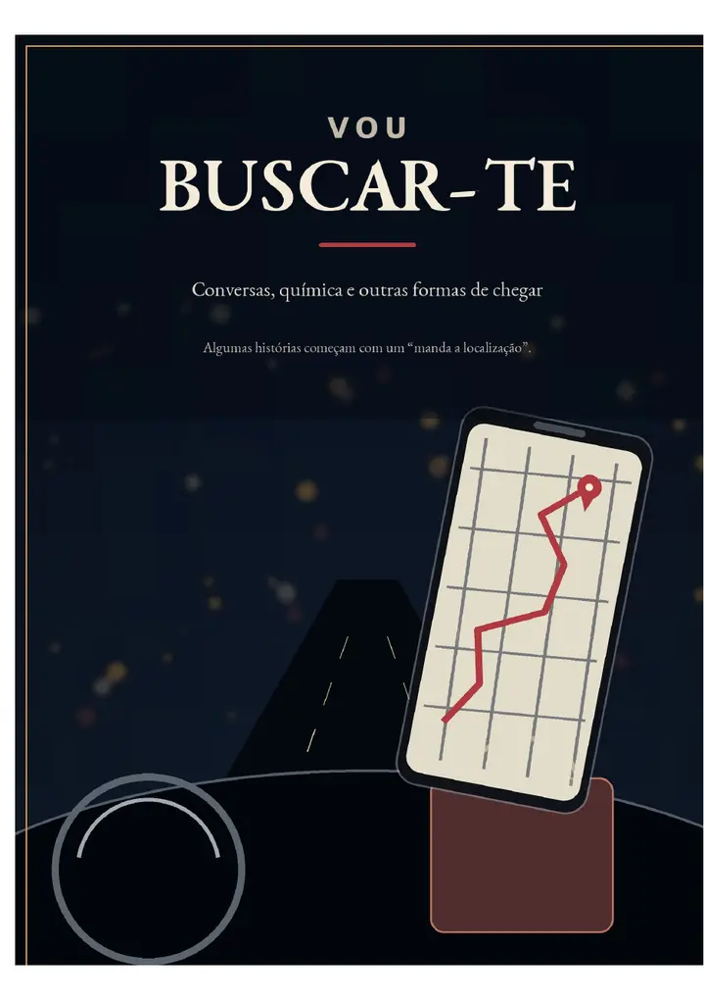

Ficção contemporânea · Romance breve
Vou Buscar-te
Conversas, química e outras formas de chegar
Em Maputo, uma frase prática — “manda a localização” — abre uma história sobre desejo, cuidado, orgulho e a aprendizagem de chegar sem invadir.
Leitura gratuita